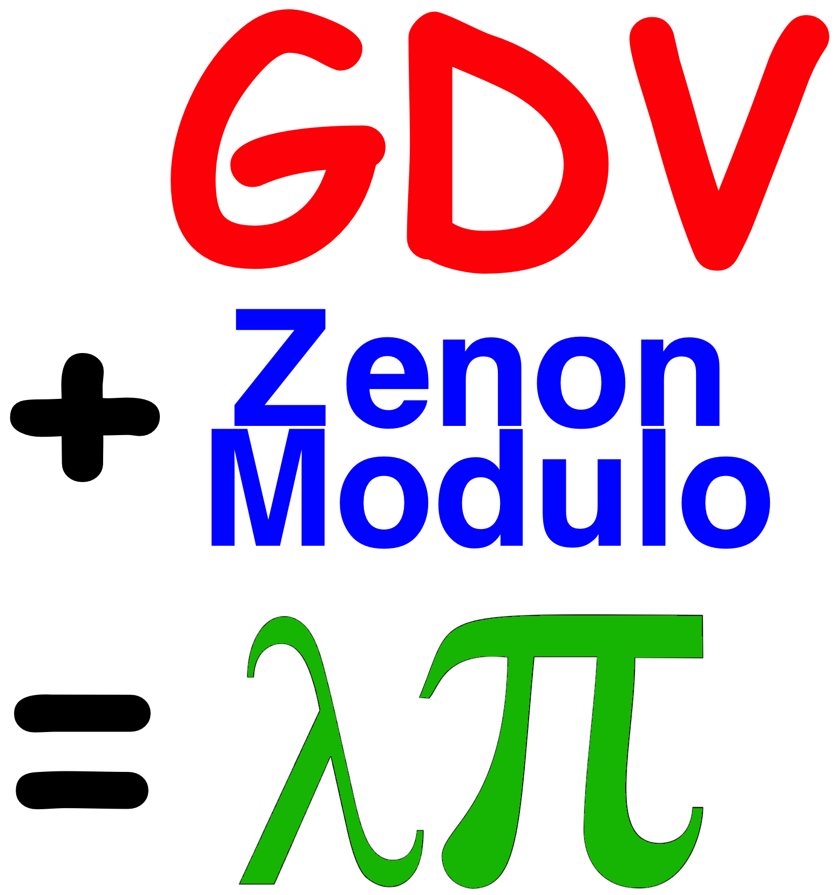

GDV to LamdaPi

What, Why, How?
- Convert TSTP derivations into LambdaPi terms
- Generalize Ekstrakto (limited to CNF)
- Output LambdiPi support files from GDV, and
Use ZenonModulo to discharge proof obligations
- Verify the LambdiPi terms with lambdapi
Added Verification Value
- Leafs (derived) from the problem
- Satisfiable problem and leaf axioms
- Complete DAG
- Refutations
Implementation
- Print LambdiPi signature and formulae in JJParser
- New options to control verification process
- Working (almost!) for CNF and FOF
- TF0, Skolemization steps, and more, coming